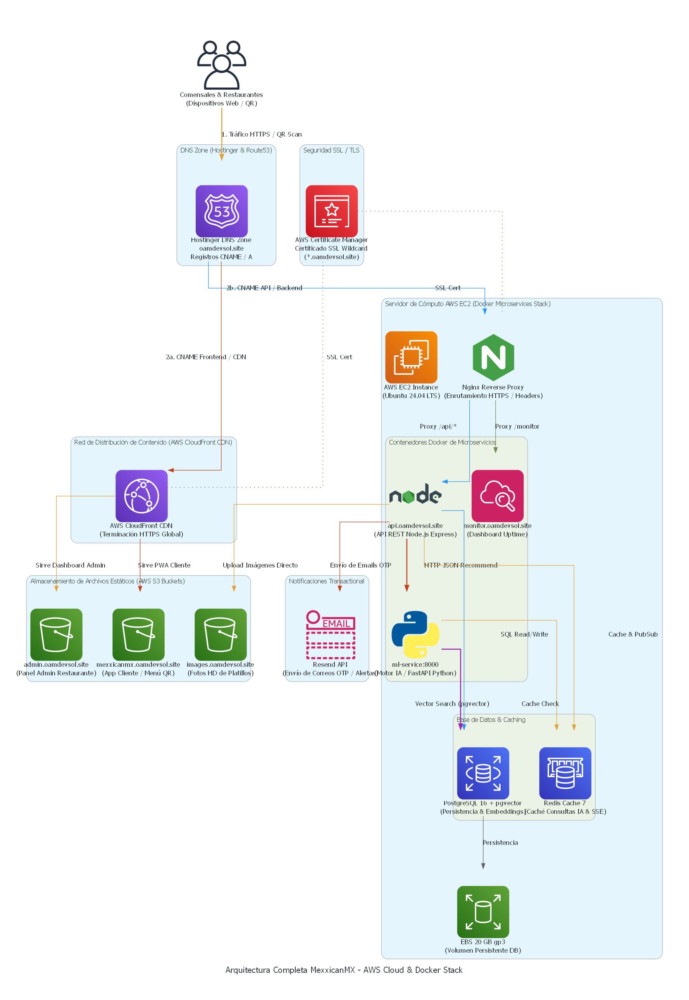
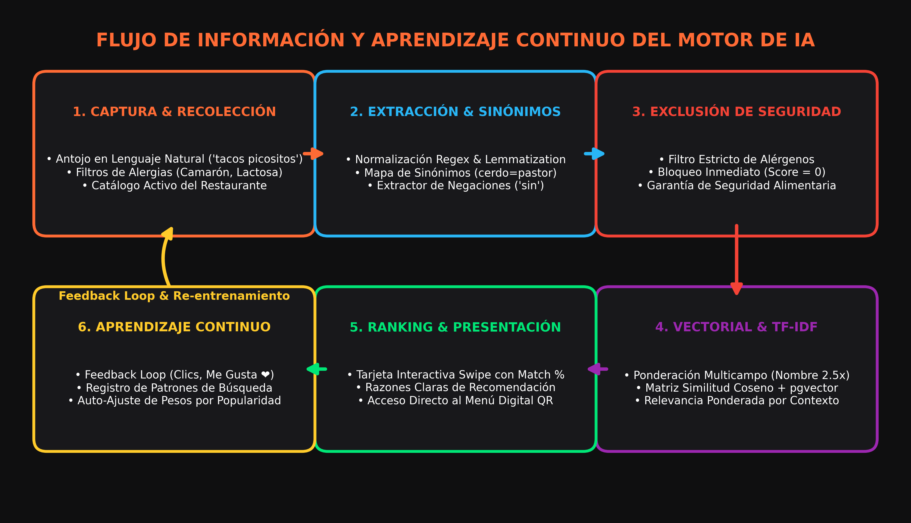

Menús digitales QR con recomendación multicampo por Machine Learning
EQUIPO
Equipo MexxicanMX
PRODUCCIÓN
mexxicanmx.oamdevsol.site
ADMIN
admin.oamdevsol.site
El dueño administra platillos, fotos, precios, ingredientes y alérgenos.
El comensal escanea en mesa y accede a la carta o al cuestionario IA.
Captura el antojo en lenguaje libre y marca restricciones/alergias.
El microservicio Python procesa sinónimos, TF-IDF, pgvector y exclusión estricta.
Muestra platillos con % de coincidencia y garantía de seguridad alimentaria.
Clics y ❤️ actualizan la relevancia y priorización de platillos.


Servidores en AWS con fallback a Docker local si falla la red de la universidad.